Abstract
It is desireable feature for a polymorphic virus to avoid linear memory access during decryption. In 2000 The Mental Driller proposed an algorithm, known as PRIDE [1] which could easily produce a large number of permutations. In this paper I would present another technique to randomize the memory access within decryption loop, based on the linear and inversive congruential random numbers generators which properties are well characterized.
Introduction
Several years ago whale asked me is it possible to construct a pair of pseudo-random numbers generators which could produce the same sequence in a direct and reverse order [2]. At that time I was unable to answer the question, and suggested to generate a pseudo-random sequence in encryption part of the engine, store it to memory and use the resulting array from top to down; but when I recently flipped through the archives looking for some e-mail address I saw this conversation and decided to check the topic. I quickly found the effective and extremely simple solution to generate a pretty large number of RNGs with desired properties.
Getting to the point
The oldest and most widely used type of RNG algorithms is linear congruential generator:
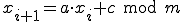
where m is the "modulus", a - "multiplier", c - "increment" and 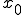 is the "seed" are values that specify the generator. For example, many of the Z0MBiE's viruses including Mistfall [3] are using LCG with a = 214013, c = 2531011, 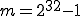 (modulus with the size of machine word will simplify the arithmetics), while the initial seed for a generator being choosed randomly (virus writes prefer to seed the generators with the values returned by GetTickCount() function and/or RDTSC instruction.
There are inverse of LCG which is called inversive congruential generator:
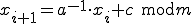
where 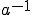 is a modular multiplicative inverse of a modulo m:
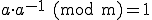
and that is exactly what we need to reverse the sequence of "random" numbers.
Suppose that we have 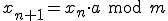 and multiply it by
,  , since 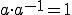
this expression is equal to 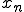. All neccessary details once could find in Wiki [4].
, since 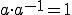
this expression is equal to 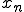. All neccessary details once could find in Wiki [4].
Getting the inverse
The multiplicative inverse for the given a and m exists if, and only if, a and m are coprime (which is to say they have no common factors or that their greatest common divisor is equal to 1). Sadly, the number 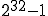 is composite (product of 3, 5, 17, 257, 65537), so if we choose it as a modulus, we'll need to test all possible values of a whether it is divisible by the factors listed above. To avoid the tests we could select the prime m which mean that we could use any value of a and it will have no common divisors with m by definition.
Surely it will reduce the overall number of possible generators, but the remaining generators are still numerous. We could even estimate our losses. The prime counting function 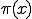 proposed by Gauss and Legendre approximates the number of primes below any given x as 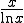. So if we choose our m from 1024...2048 we'll get about 120 possible values for m. Since those numbers are small, this value could be counted exactly, but that's not the issue. The point here is that we'll get enough candidates anyway.
Finally, we could find the inverse by using extended Euclidian algorithm:
uint32_t xgcd(uint32_t a, uint32_t b) { uint32_t x, y, u, v, m, n, q, r, b0; x = 0; y = 1; u = 1; v = 0; b0 = b; while (a != 0) { q = b / a; r = b % a; m = x - u * q; n = y - v * q; while (m > b0) m += b0; while (n > b0) n += b0; b = a; a = r; x = u; y = v; u = m; v = n; } return x % b0; } //... r = xgcd(a, m);
We could check the obtained value by testing whether (a * r) % m == 1, or by
modifying the xgcd() function: return b == 1 ? x % b0 : 0;. But this check is
redundant, since we knew that for any a < m and prime m, there would
be always an inverse r and that it is always unique in the multiplicative group
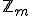.
Now we could traverse the sequence of pseudo-random numbers back and forth with:
uint32_t lcg(uint32_t x) { return (x * a + c) % m; } uint32_t icg(int32_t x) { x -= c; while (x < 0) x += m; return (r * x) % m; }
So, for the prime m (1024..2048) and a (1..m) (a could not be greater than m) we got 208 850 possible RNGs (this number must be multiplied by c to take into account all possible increments. Not so bad and still simple. One could use the sieve of Eratosthenes to find the prime numbers (with a bit of optimization the memory requirements for the numbers below 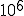 could be reduced down to 60Kb):
/* http://www.fpx.de/fp/Software/Sieve.html */ #define TEST(f,x) (*(f+(x)/16)&(1<<(((x)%16L)/2))) #define SET(f,x) *(f+(x)/16)|=1<<(((x)%16L)/2) uint8_t *make_primes(int max) { uint8_t *feld; int size = (max >> 4) + 1, teste = 1, mom; if ((feld = (uint8_t*)malloc(size)) == NULL) return NULL; bzero(feld, size); while ((teste += 2) < max) if (! TEST(feld, teste)) for (mom = 3L * teste; mom < max; mom += teste << 1) SET (feld, mom); return feld; } int is_prime(int n, uint8_t *feld) { if (n % 2 == 0) return 0; if (!TEST(feld, n)) return 1; return 0; } int find_nearest_prime(int n, uint8_t *feld, int max) { int m = n - 2; if (n % 2 == 0) m++; while ((m += 2) < max) if (! TEST(feld, m)) return m; return n; }
As I already told in the description of Lacrimae virus, a max distance between any given x and nearest prime number in the range from one to would not exceed 113 [5].
References
thread in
Z0mbie,
Wikipedia
herm1t